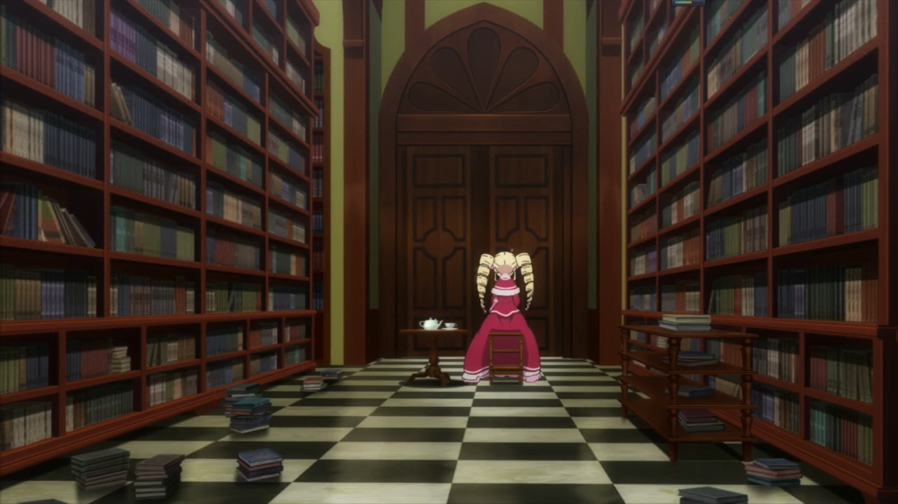
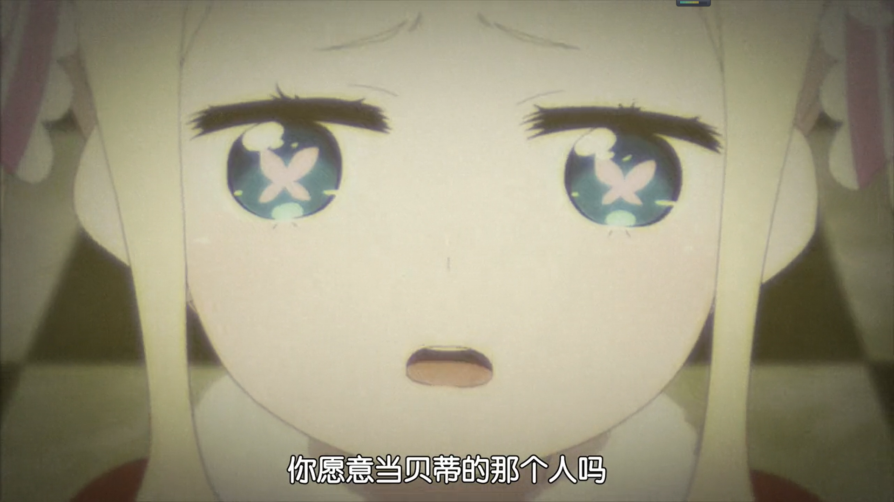
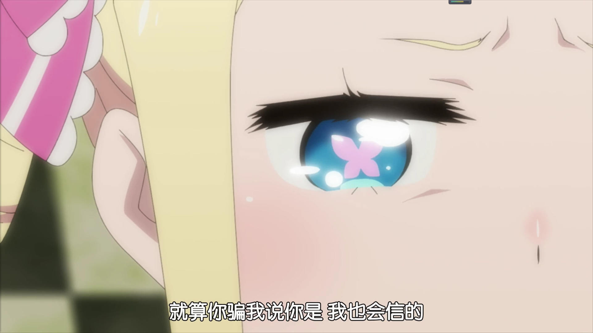
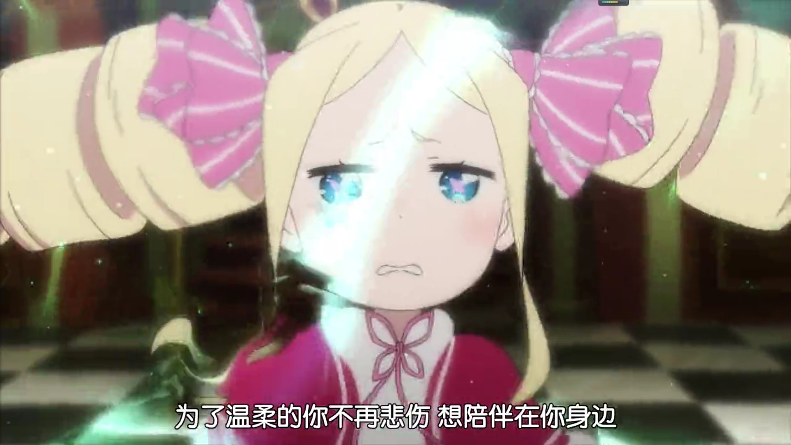
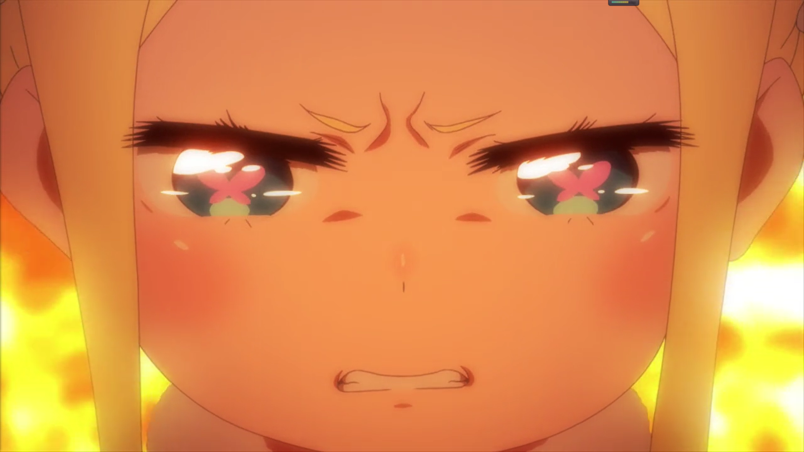
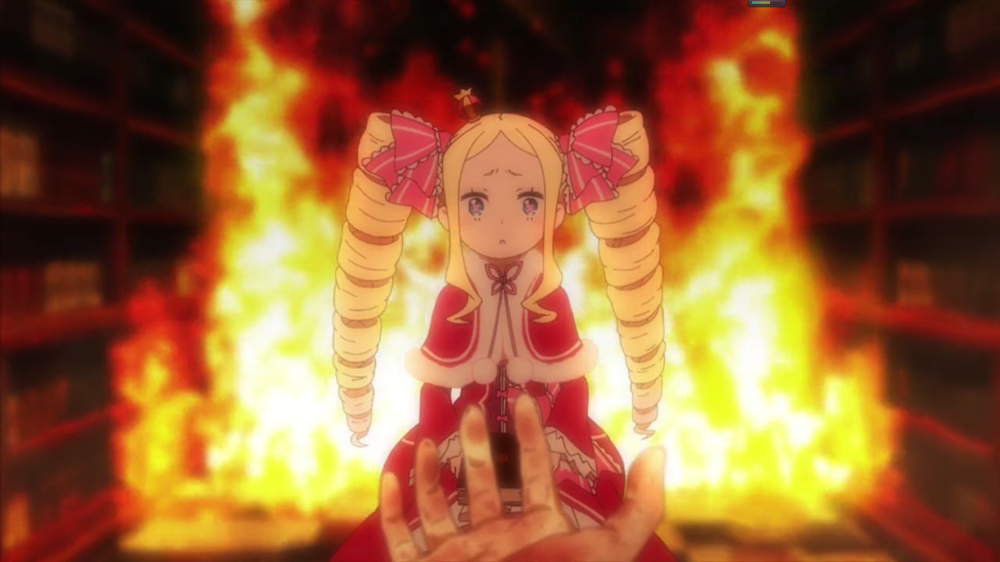
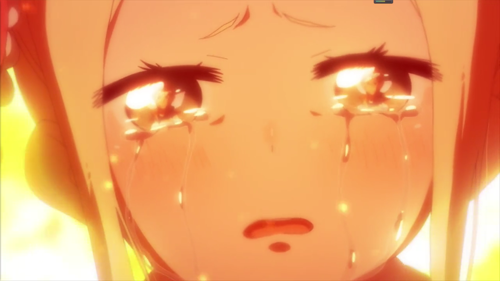
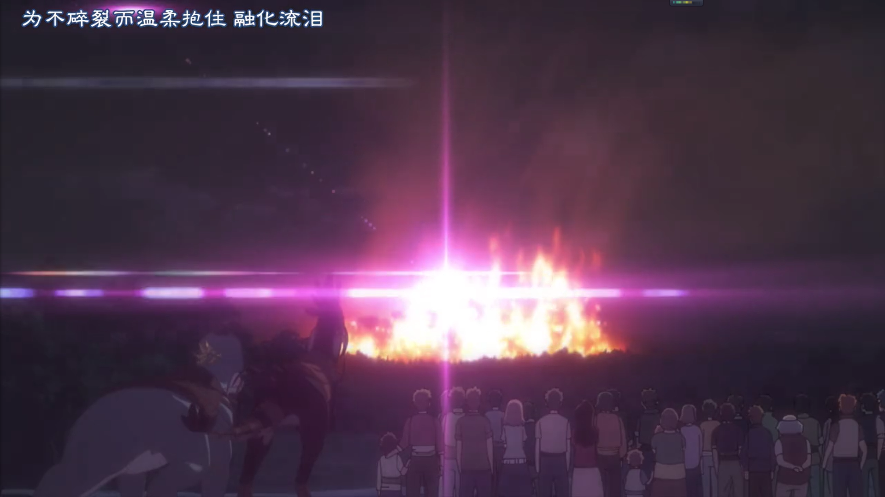
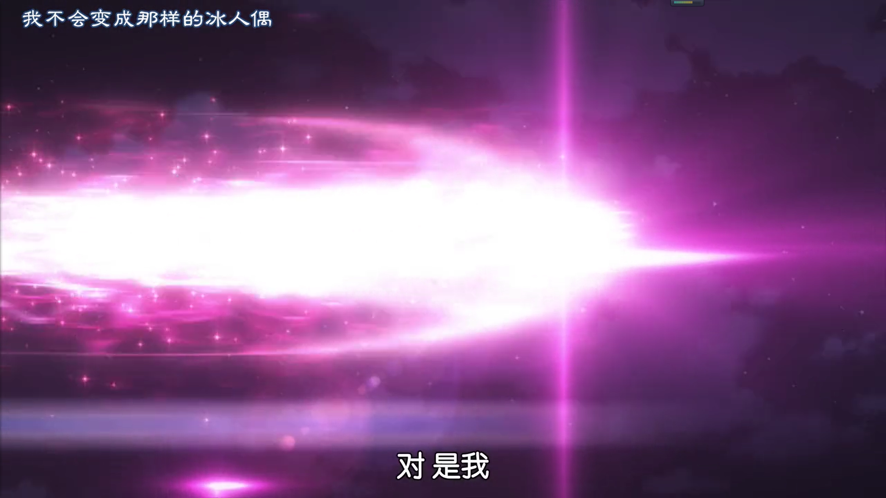
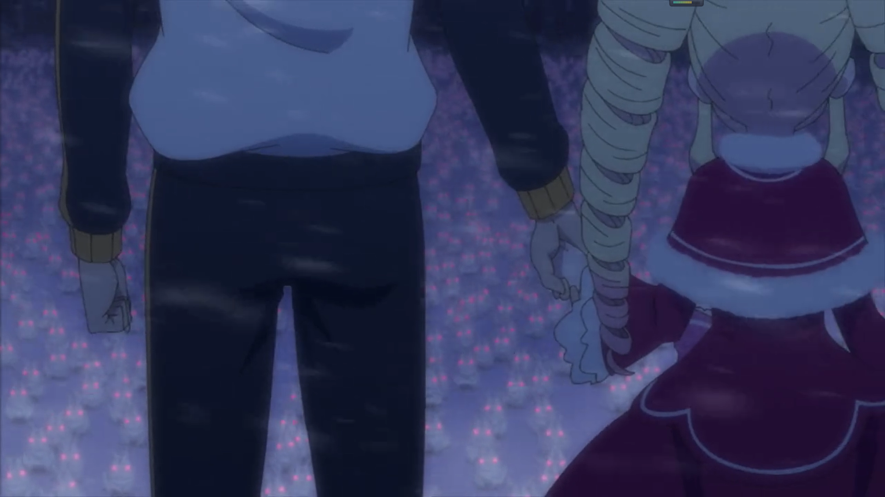

貝蒂（碧翠絲）：守護著羅兹瓦爾宅邸中只有通過機遇門才能進入的被稱爲禁書庫的房間的人工精靈， 實際上只是一個穿著華麗洋裙的金髮傲嬌美少女，總是獨自坐在禁書庫的門前，等待著某人的到來。
雖然看上去是一個小蘿莉，但是自從四百年前合法蘿莉與母親“貪婪的魔女”愛姬多娜定下守護禁書庫的約定， 貝蒂便一直在等待著“那個人”來繼承禁書庫中的知識，結束那束縛著貝蒂的職責。四百年間，也有許多人來到禁書庫想要帶走貝蒂，然而貝蒂最後還是留在了禁書庫， 直到菜月昴出現在貝蒂面前。
菜月昴毫不客氣又沒禮貌地闖入了禁書庫，他那與之前所有來訪者都截然不同的態度讓貝蒂懷疑他是否就是母親愛姬多娜所説的“那個人”。然而貝蒂擔心她那微弱的期待遭到背叛， 選擇了送昴去聖域。然後，宅邸受到攻擊，就在貝蒂孤獨了四百年，認爲“那個人”永遠不會來，準備在這次攻擊中與禁書庫一起消亡的時候，昴又一次來到了貝蒂的面前。
“你願意儅貝蒂的那個人嗎？”
貝蒂帶著希冀詢問，“你是笨蛋嗎，我怎麽可能是你的‘那個人’”，昴明確的回絕了貝蒂的感情。
“就算你騙我說你是，我也會信的。就算明知你騙我，我也只能選擇相信的。。。可你説你不是，你還説我笨蛋”
“因爲我是笨蛋大笨蛋，總是記著四百年前的口頭約定，所以，不管你再説什麽，已經結束了！”
“要我説多少遍都行，我不是什麽‘那個人’。但是でも！,我想和你在一起，碧翠絲。 爲了溫柔的你不再悲傷，想陪伴在你身邊”
沒能完成約定將禁書庫傳承給“那個人”的貝蒂開始自暴自棄，“你就是個笨蛋，不是嗎。已經到此爲止了，我已經不奢求更多了，我已經完全違背了和母親的約定吧。”
“那就，最後聽我説幾句吧。碧翠絲，幫幫我。”
“！？？”
“我也想過許多什麽‘帶你走出孤獨’之類耍帥的話，可我覺得那些都只是趁勢的一些敷衍，因爲你其實根本不需要我的力量、我的救助。你是這麽强大、聰明、可愛， 你有十足的能力一個人活下去。所以像救你啊助你啊，這種話是打動不了你的。可是，就連强大聰明可愛的你，也害怕一個人活著，那難受又寂寞吧， 因此你依賴‘那個人’的存在，這誰也無法責備你”
“不要擅自。。。拒絕了我的感情的你，又明白我的什麽？”
“我明白你很溫柔，明白如果有人因爲噩夢呻吟你會去握住那人的手讓他安心。無力的我幫不了你，可我還是不想讓你孤獨一人，那我能做的，只有依賴你拜托你了。 碧翠絲，幫幫我，幫幫沒有你就寂寞得活不下去的我。”
“狡猾，你這樣太狡猾了！可你説了你不是‘那個人’，你明明拒絕了我！可是，四百年來我一直一個人，就算我現在握住你的手，可你還是會很快死掉的，人類的壽命，對我來説就像一眨眼，現在就算依賴這種東西。。。”
“可明天我還是能牽住你的手的，明天、後天、大後天，就算四百年不行，這樣的一天天還是能和你一起度過，就算永遠在一起不行，明天和現在，我還是能珍視你的。所以，碧翠絲，選我吧”
“可你不是那個人”“不是，我就是我，菜月昴。把你那對聯長相都不知道的傢夥的四百年單相思全忘掉吧。比起害怕也許會到來的離別，先和我一起活在必定到來的明天吧。我很弱，但奢望卻多，你和我在一起， 像你這麽愛照顧人，肯定會忙到沒空想什麽無聊寂寞的。選我吧，碧翠絲”
“你遲早會不在”“沒有什麽是永遠的，你害怕的未來總有一天會到來，就算如此”“你遲早會抛下我”“就算如此還是讓我們在一起吧，一起活下去吧、一起走下去吧，一起積纍回憶，讓我們回首時能挺胸笑著説真開心吧， 積纍彌補你寂寞的四百年還有餘的快樂回憶”
“就算這樣，總有一天，我還是會一個人。”
“對壽命永恆的你來説，和我度過的時光或許就只是一刹那，那麽我就把我這一瞬，銘刻在你靈魂裏吧，讓你明白菜月昴是個在永恆的嵗月裏都不會褪色的鮮明男子”
“選我吧，碧翠絲！你不就是希望有人能帶你出去，才一直坐在門前的嗎！”
"!!!!!!!!!!!!!!!!!!!!!!"
最后，昴説服了貝蒂，和貝蒂一起伴隨著燿眼的光芒，在衆多友人與村民的注視下，從燃燒的羅兹瓦爾宅邸中飛起
“昴”“對，是我”“昴，昴”“沒錯，那就是我的名字”
“昴，昴，昴！昴！！”
“你終於肯叫我名字了”
然后，貝蒂與昴手牽著手，一起站在了被大雪覆蓋的聖地，共同面對眼前凶惡的魔獸--多兔
“會變怎樣我可不管啦”“嗯，就放手一博吧，由我和你”
以上内容出自從零開始的異世界生活第二季第24集